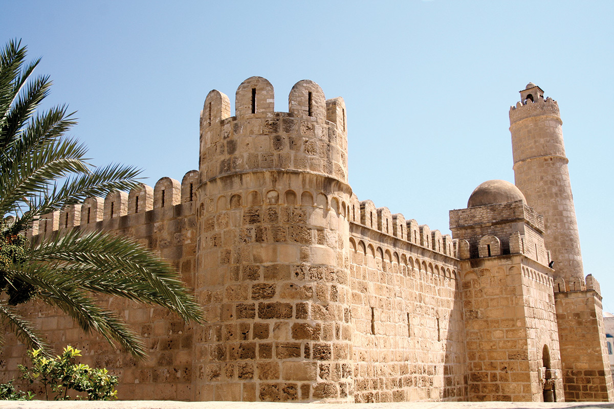

SOUSSE (arabe : سوسة ) est une ville portuaire de l'Est de la Tunisie, située à 143 kilomètres au sud de Tunis, et ouverte sur le golfe d'Hammamet (mer Méditerranée). Capitale du Sahel tunisien
Elle est parfois surnommée la « perle du Sahel » et chef-lieu du gouvernorat du même nom, elle est la troisième municipalité du pays après Tunis et Sfax, et la quatrième agglomération, Nabeul étant la troisième.
médina de Sousse est inscrite au patrimoine mondial de l'Unesco depuis 1988.
La médina de Sousse, son fort " le Ribat", sa Grande Mosquée, sa Kasbah, ses remparts forment un ensemble exceptionnel de monuments à la beauté austère, puissamment évocateur du passé de cette place forte médiévale.

Héritière d’une grande ville antique du nom d’Hadrumète, la Sousse musulmane fut d’abord un petit avant-poste de Kairouan, la première capitale du Maghreb. Au VIIIe siècle, en effet, y fut implanté un ribat, une communauté d’ascètes vouée à la surveillance du littoral en même temps qu’à la propagation de la doctrine religieuse.
Ce Ribat a été conservé intact. Erigé face à la mer, il est très semblable aux petits châteaux orientaux qui s’édifiaient au même moment en Syrie : une enceinte flanquée de tours rondes, une cour carrée bordée de cellules pour les vivres et les voyageurs de passage ; et à l’étage, les cellules des ascètes et une salle de prière. Cette dernière, d’une grande sobriété, est la plus ancienne d’Afrique restée dans son état originel.
Quant à la tour-vigie, haute tour cylindrique comme les minarets abbassides, elle permettait de communiquer par signaux lumineux avec la longue chaîne de ribats qui se constituait alors tout au long de la côte africaine. Grâce à eux, selon la tradition, un message pouvait être transmis en une seule nuit d’Alexandrie à Ceuta.
PORT KANTAOUI
Port El-Kantaoui est une marina située au nord-ouest de la ville de Sousse,
qui est devenue l'une des plus importantes stations balnéaires de la Tunisie.
GOLF
Profitez des dix golfs tunisiens qui vous feront découvrir des paysages contrastés : montagnes boisées, dunes de sable, orangeraies ou paysage saharien.
Une destination proche et ensoleillée pour un séjour golfique réussi.